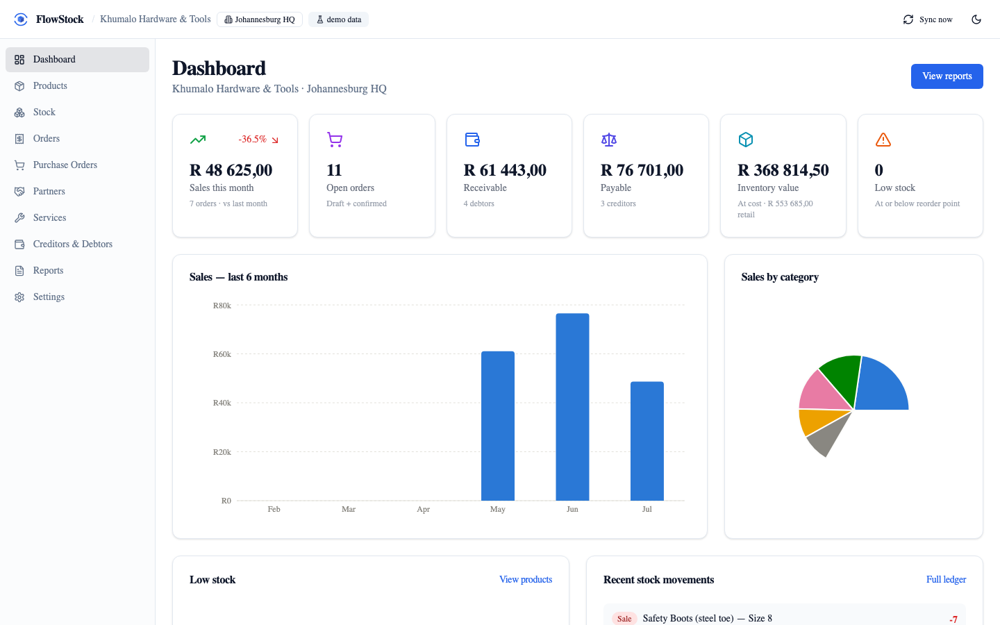
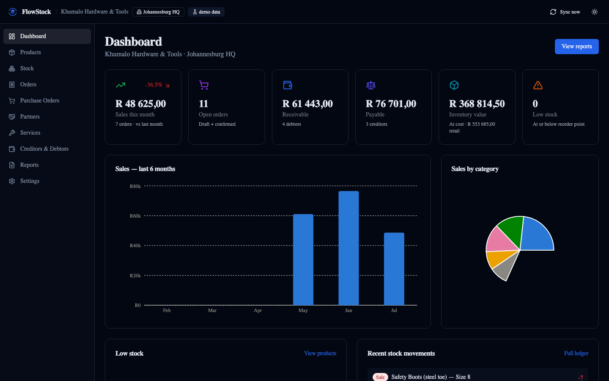
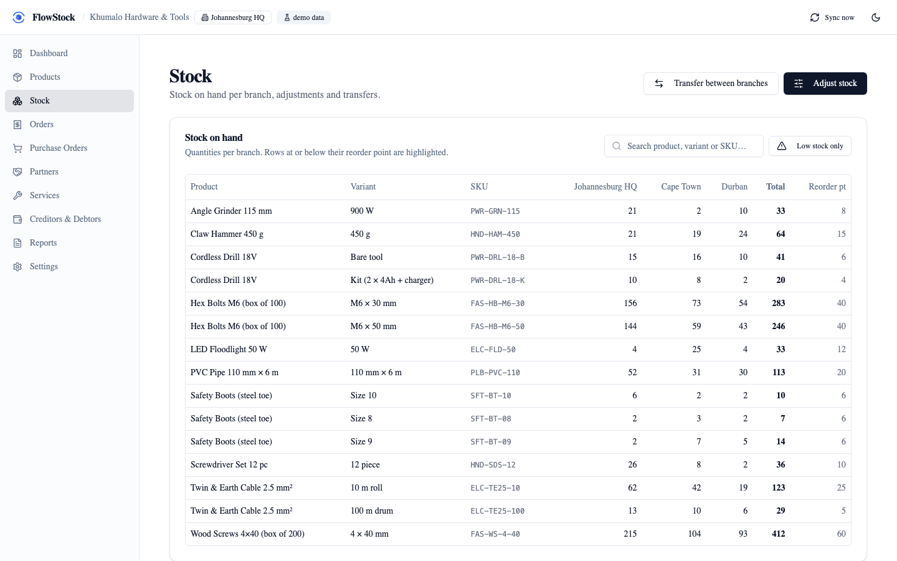
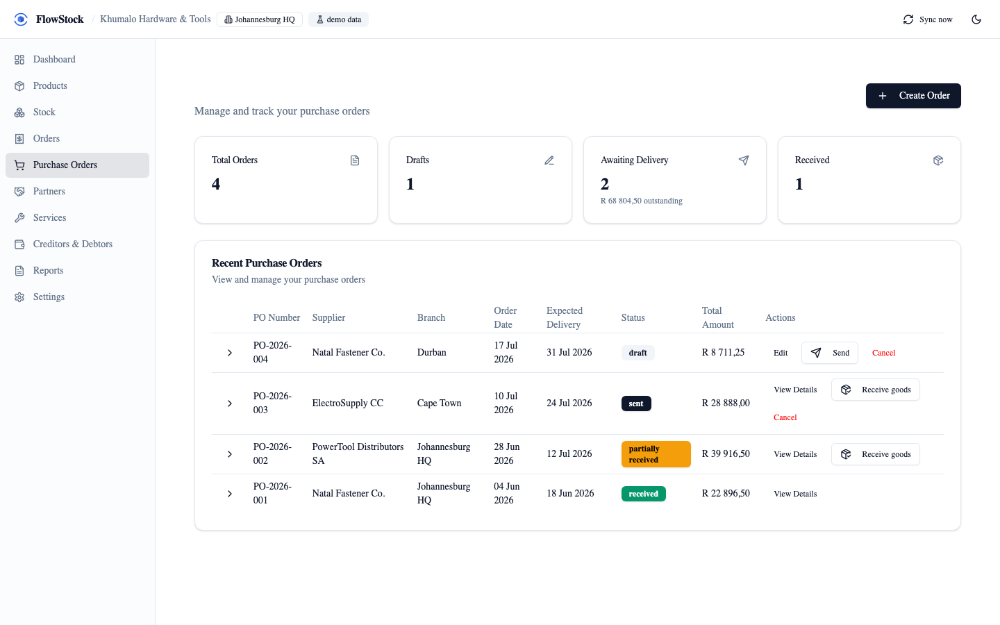
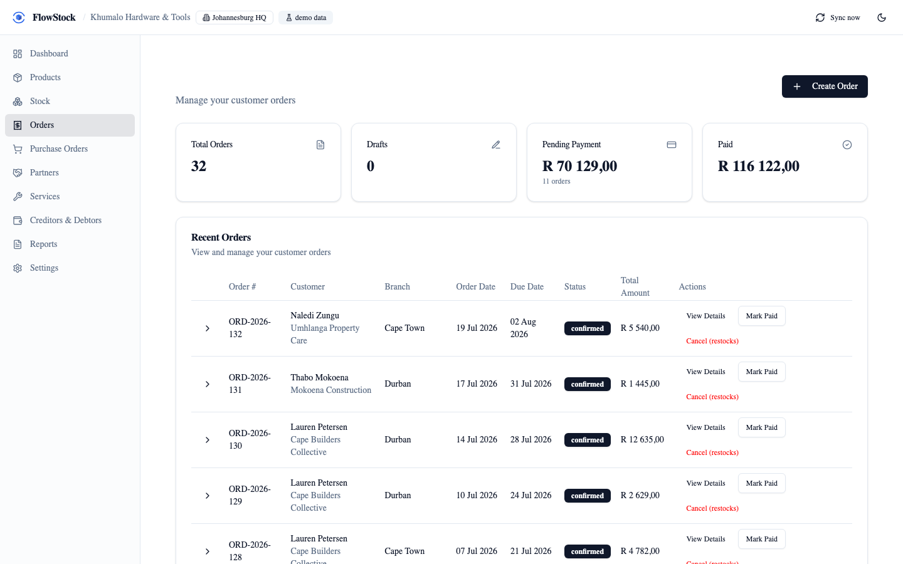
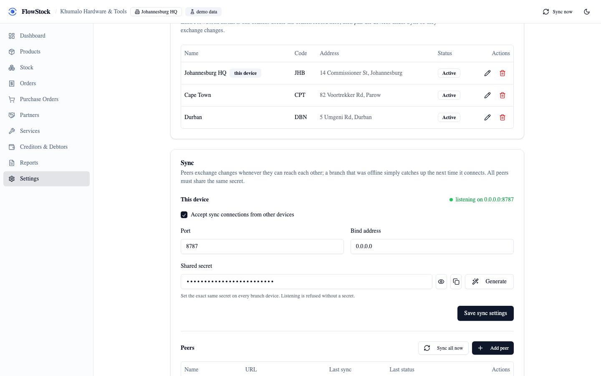

FlowStock is a single self-hosted binary for multi-branch stock control: products, stock, orders, purchasing and accounts. Each branch runs its own copy, works fully offline, and syncs peer-to-peer with the others. No cloud, no accounts, no central server.
Try it in seconds: docker run -p 8787:8787 ghcr.io/vul-os/flowstock


Real stock control backed by an append-only ledger — not a spreadsheet, not a mutable counter that drifts.
Categories, SKUs, price and cost price, attributes and reorder points — with per-branch stock on hand.
Sales orders that deduct stock on confirmation; purchase orders with VAT and goods receiving, including partial receipts.
Stock counts, write-offs and between-branch transfers — every change is an audited movement in the ledger.
Balances computed from orders, purchase orders and recorded payments. Know who owes what at a glance.
Sales, inventory valuation, movements, low stock and accounts — all computed live, all exportable to CSV.
One ~12 MB binary with a local SQLite database. No cloud dependency, no subscription, no account required.
Stock is an append-only ledger, so two branches that both traded while disconnected always converge to the same totals. No central server decides the truth — the branches do, together.
Run FlowStock on a laptop, a shop PC, a server, a NAS or a Raspberry Pi. Each keeps a full local database.
Point one branch at another over the LAN, a VPN, or a node you run on your own cloud instance. You type the address — there is no directory and no default endpoint. A shared secret bootstraps the pairing; after that the two branches authenticate each other by Ed25519 key. A new device adopts the existing workspace and pulls its history.
An offline branch never stops working. When it can reach a peer again, changes replay both ways — and merge without conflict.
Catalog edits resolve last-writer-wins; stock movements merge by union. Any topology works: a pair, a hub, or a full mesh.
Generated straight from the app's demo data.




One binary, no dependencies. Docker, a release download, or from source.
# Docker docker run -p 8787:8787 -v flowstock-data:/data \ -e FLOWSTOCK_HOST=0.0.0.0 -e FLOWSTOCK_DATA_DIR=/data \ ghcr.io/vul-os/flowstock:latest # or a release binary ./flowstock # then open http://localhost:8787 # or from source (Go 1.25+, Node 18+) git clone https://github.com/vul-os/flowstock.git cd flowstock && npm install && npm run build:all ./flowstock
Free and open source, MIT licensed. Runs standalone — one binary, no dependencies.